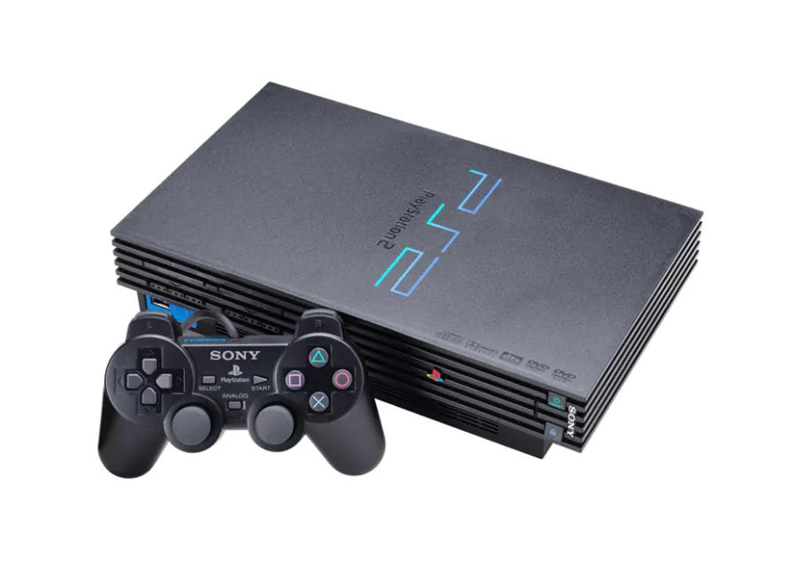
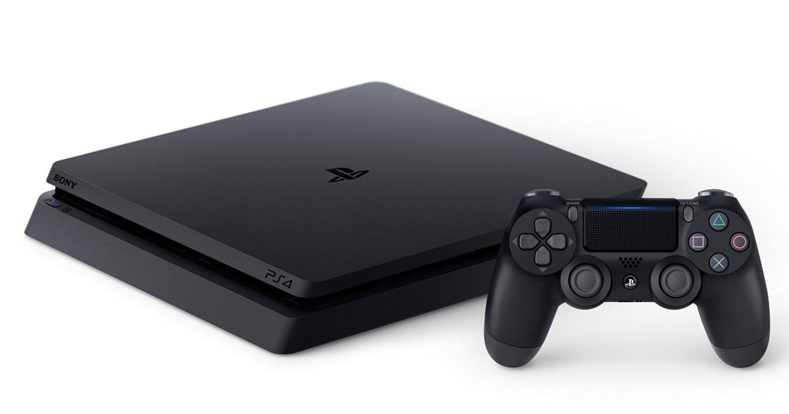

1

En septembre 1995, la PlayStation déboule enfin en France ! Une console dotée d’un support CD, d’une carte mémoire, et qui promet à de nombreux joueurs (souvent issus de la génération Super Nintendo / SEGA Mega Drive) une toute nouvelle expérience de jeu, avec notamment l’avènement de la 3D (et des temps de chargement).
2

Le 24 novembre 2000, Sony commercialise en Europe sa nouvelle PlayStation 2. Une console très (très) attendue à l’époque, avec très peu d’exemplaires mis sur le marché, si bien que seuls quelques élus ont pu profiter de la PS2 pour les fêtes de fin d’année. Certains se souviennent encore du lancement pour le moins houleux au Virgin Mégastore à Paris… Une PS2 lancée avec de nombreux jeux, dont quelques belles licences en devenir (SSX, TimeSplitters…), mais aussi Fantavision.
3

En mars 2007, Sony lance en Europe sa PlayStation 3. Gonflé à bloc par le succès colossal de la PS2, Sony propose alors une PS3 au tarif de 599€, avec la promesse d’un jeu en Full HD et d’instaurer un nouveau support vidéo révolutionnaire, le Blu-Ray. Une PS3 qui s’accompagnait alors d’un line up impressionnant de 25 jeux, mais cela n’a pas empêché la console de connaitre un lancement assez chaotique… A noter que les premiers modèles de PS3 (60 Go) était rétrocompatibles avec les jeux PS1 et les jeux PS2, ce qui ne sera pas le cas de la PS5.
4

Fin 2013, alors que la Xbox One est en rayons depuis quelques jours, Sony commercialise sa PS4, et affiche sa console à “seulement” 399€, contre 499€ pour la machine de Microsoft. Une pichenette commerciale gagnante pour le géant nippon, qui a rapidement écrasé Microsoft sur cette génération, malgré des Xbox 360/PS3 au coude à coude quelques mois auparavant. Toutefois, au line-up, mis à part Knack et Killzone : Shadow Fall, la PS4 n’avait pourtant rien de bien “exclusif” (ni de vraiment excitant) à proposer aux joueurs…
5

Le 19 novembre 2020, Sony va inaugurer un premier “double lancement”, avec la commercialisation d’une PS5 dotée d’un lecteur de disques, et d’une PS5 Digital Edition, qui fera la part belle au jeu 100% numérique, comme la PSP Go en son temps. Une PlayStation 5 lancée avec un line-up assez faible pour certains, avec quelques titres exclusifs à la machine, comme Demon’s Souls ou Destruction All Stars, mais aussi des jeux qui seront lancés également sur PS4 (comme Spider-Man Miles Morales, Sackaboy a Big Adventure ou encore le futur Horizon Forbidden West, attendu en 2021).